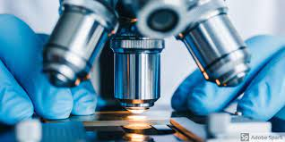

Test et procedures

Le diagnostic d’un cancer nécessite la réalisation de plusieurs examen cliniques, biologiques et d’imagerie.
L'examen Clinique
L’examen clinique mené par le médecin est une étape indispensable dans l'élaboration du diagnostic d'un cancer.
Le médecin consulté examine le patient : il mesure son pouls, sa tension, il écoute sa respiration... Un examen spécifique de la région potentiellement atteinte est aussi conduit. L’examen clinique doit être complet. Il a non seulement pour but de diagnostiquer la présence d’une tumeur, mais aussi de repérer la présence éventuelle de métastases. Il permet en outre les possibilités thérapeutiques.Les examens biologiques
Un bilan sanguin et/ou urinaire complète le premier bilan clinique.
Ils permettent de mesurer des paramètres relatifs à l’état de santé général du patient, mais aussi de doser les marqueurs tumoraux qui seraient éventuellement présents. Ces marqueurs sont généralement des molécules formées en petites quantités par des cellules normales mais qui se retrouvent produites en excès par les cellules tumorales. Une fois passés dans la circulation sanguine ou dans les urines, ces marqueurs peuvent être dosés : leur concentration est généralement dépendante du nombre de cellules cancéreuses. Attention toutefois, les marqueurs tumoraux peuvent parfois être produits en excès lors de certaines maladies non cancéreuses. À l’issue d’un dosage de marqueurs tumoraux, un taux élevé ne peut être interprété qu’après des examens complémentaires, qui permettront d’en identifier l’origine cancéreuse ou non.
Parmi les marqueurs tumoraux courants, citons entre autres :
l’ace (antigène carcino-embryonnaire), un marqueur anormalement élevé chez les patients atteints de cancers du du de la thyroïde, du poumon, du rein, de l’estomac...
la calcitonine, un marqueur de cancer de la thyroïde.
L'imagerie medicale
L'imagerie médicale est un ensemble de techniques permettant d’obtenir des images des parties internes du corps.
Les techniques d'imagerie permettent aux médecins de vérifier la présence d'une tumeur, sa taille, sa forme, son activité métabolique et sa localisation exacte. Ces informations sont utiles pour définir les traitements à mettre en œuvre et pour évaluer si la chirurgie peut être proposée.
La radiographie
Elle permet d’obtenir une image à l’aide de rayons x. Les organes y apparaissent noirs ou blancs selon la capacité des rayonnements à les traverser. Pour observer certains organes, l’injection d'un produit dit « de contraste » est nécessaire : elle permet de les opacifier à l’image.
L'echographie
C'est une méthode se fondant sur l’utilisation d’ultrasons, c’est-à-dire des ondes sonores imperceptibles à l’oreille. Les ondes sont envoyées à travers la peau en direction de l’organe. Les ultrasons, qui ont une vitesse constante, sont réfléchis par les tissus qu’ils rencontrent et reviennent vers la sonde émettrice. Un traitement informatique traduit les temps mis pour parcourir cette distance en images, permettant d’obtenir une représentation indirecte de la région.
La sensibilite des techniques de diagnostic
Lors d’un examen clinique, le médecin ne peut détecter des tumeurs superficielles dont la taille est inférieure à 1 cm de diamètre environ. À ce stade, la tumeur contient environ un milliard de cellules. L'imagerie médicale détecte des tumeurs de 1 mm de diamètre, soit environ 10 millions de cellules tumorales. Les marqueurs tumoraux les plus sensibles détectent des tumeurs contenant environ 100 000 cellules cancéreuses. L’anatomopathologiste est capable de détecter une seule cellule tumorale qui sera visible au microscope.
Le scanner
Il utilise des rayons x. La source de rayons bouge autour du patient pour conduire à l’obtention d’une série de plusieurs clichés représentant la zone scannée en coupe, sur différentes épaisseurs.
La sensibilité de l’appareil permet en outre de générer des images beaucoup plus précises qu’avec une radiographie classique. Le scanner est donc souvent utilisé pour étudier une anomalie initialement détectée par radiographie ou par échographie. Il facilite aussi l’étude de certains organes difficiles à caractériser par radiographie (pancréas, foie, poumon, rein).
L'IRM ou imagerie par resonance magnetique
C'est une méthode d'exploration se fondant sur la détection des réactions de différentes parties du corps exposées à un champ magnétique. Par l’énergie qu’il apporte, le champ magnétique oriente dans le même sens tous les atomes d’hydrogène qui composent les tissus. Lorsque le champ est stoppé, ces atomes reviennent à leur état initial en restituant cette énergie. Tous les tissus de l’organisme ne comportent pas les mêmes proportions d’hydrogène. Aussi, les niveaux d’énergie restitués seront différents d’un organe à l’autre. Ceux-ci sont enregistrés par un ordinateur qui traduit ces différences en image par des degrés de noir et blanc qui représentent indirectement les organes explorés.
La scintigraphie
Elle permet de visualiser le fonctionnement d’un organe. Elle se déroule en deux temps : un produit faiblement radioactif, appelé « traceur », est injecté au patient. Il se fixe spécifiquement sur l’organe qui doit être observé. Ensuite, une gamma-caméra couplée à un ordinateur enregistre les rayonnements émis par le traceur. Une cartographie très précise de l’organe à explorer est obtenue et peut être reproduite à plusieurs intervalles de temps.
La PET-scan ou "TEP" pour tomographie par emission de positrons
Le PET-scan permet également de visualiser le fonctionnement des organes. Il consiste d’abord à injecter du glucose marqué, c'est-à-dire un sucre faiblement radioactif, puis à analyser l’image obtenue par un scanner. Les cellules cancéreuses sont identifiables car elles ont une activité plus importante que les cellules saines et ont donc besoin de plus de glucose pour fonctionner. Toutefois, certaines tumeurs ne surconsomment pas de sucre et ne peuvent donc être observées par cette méthode.
Les biopsies
La biopsie permet de confirmer le diagnostic et de préciser la nature de la lésion cancéreuse.
La biopsie est un examen incontournable lors d’un diagnostic de cancer. Elle seule permet de confirmer le diagnostic et de préciser la nature de la lésion cancéreuse. En pratique, la biopsie consiste à prélever un échantillon de tissu suspect pour l’examiner par microscopie.
L’analyse des tissus est effectuée par un anatomo-pathologiste. Elle est parfois complétée par une caractérisation moléculaire qui vise à rechercher les spécificités des cellules (dont les marqueurs tumoraux) qui forment la tumeur et à orienter le pronostic et/ou le traitement.
Selon la localisation de la tumeur, le prélèvement est réalisé par ponction, à l’aide d’une aiguille fine, ou par endoscopie, au moyen d’une sonde munie d’un système optique et introduite dans un organe creux . Dans d’autres cas, la biopsie est réalisée lors d’une intervention chirurgicale : l’ensemble de l’anomalie est alors retiré d’emblée pour être soumis à l’analyse.
Le bilan d'extension
Le bilan d’extension a pour objet de préciser l'état d'avancement de la maladie.
Lorsqu'un cancer est diagnostiqué, il est indispensable de connaître son état d'avancement. Il est notamment crucial de savoir si la maladie s’est propagée à d’autres organes. Le bilan d’extension a pour objet de répondre à ces questions. Il est établi à partir des résultats des examens diagnostiques, parfois complétés par un ou deux examens complémentaires. Ce bilan permet à l’équipe médicale d’évaluer le stade de la maladie selon la classification T.N.M. et ainsi de déterminer la stratégie thérapeutique la plus adaptée.
Les stades de la maladie
Les tumeurs malignes sont classées en fonction de leur stade d’évolution grâce au système T.N.M. Ce système prend en compte l’évolution locale de la Tumeur (T), son extension aux ganglions lymphatiques voisins (N) et son éventuelle dissémination sous forme de Métastases (M). Pour chacun de ces trois paramètres, la tumeur est caractérisée par un chiffre indiquant :
l’envahissement local : de T1 à T4 selon la sévérité ;
le nombre de ganglions lymphatiques régionaux envahis : de N0 (pas de ganglion atteint) à N3 lorsque de nombreux ganglions sont atteints ;
l’absence (m0) ou la présence (m1) de métastases